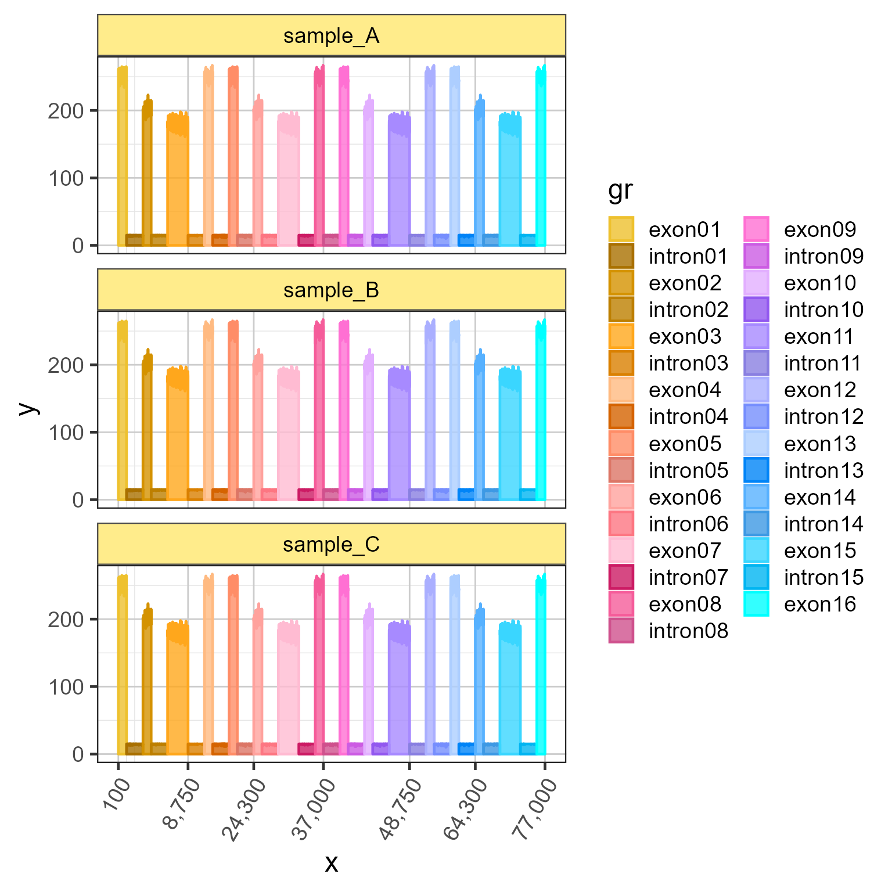

Convert exon coverage to polygons
Arguments
- gr
GRangeswherecolnames(GenomicRanges::values(gr))is present incovNames, and contains data with classNumericList.- covNames
charactervector contained incolnames(GenomicRanges::values(gr)).- baseline
numericvector of length 0, 1 orlength(gr). Ifbaselinehas names matchingnames(gr)they will be used for eachgrentry; ifbaselineis not named, it is extended tolength(gr). Thebaselinevalue is added to the coverage for each exon to offset the polygon as needed.- gapWidth
integervalue, default 200 fromoptions('splicejam.gap'), passed tomake_ref2compressed()to set a fixed with for gap, thus compressing introns to a fixed visual size. When NULL, it uses 3.3 times the median feature length.- coord_style
charactervalue to define the output style:"base"returns a matrix with polygons separated by a row ofNAvalues;"fortify"returns adata.frameintended for ggplot2, with columns"cov"and"gr"indicating the values incovNamesandnames(gr)used to separate each polygon.- ref2c
optional
listcontaining output frommake_ref2compressed(), used to compress the GRanges coordinates.- compress_introns
logicalindicating whether to compress the coverage polygon coordinates to approximately the same number of pixels per inch as the exon polygons. This option greatly reduces the size of the polygon, since introns are already about 50 to 100 times wider than exons, and whenref2cis supplied, the introns are visibly compressed to a fixed width on the x-axis. The data has many more x-axis coordinates than the data visualization, this argument is intended to reduce the intron coordinates accordingly.- verbose
logicalindicating whether to print verbose output.- ...
additional arguments are ignored.
Value
output dependent upon coord_style:
"fortify"returnsdata.framein tall format, sufficient to use withggplot2functions. Each polygon is separated by rows wherex,yvalues areNA."list"returns alistwithnumericmatrix objects."base"returns alistwithnumericmatrix objects, each of which containsNAas the last coordinate, so that eachmatrixcan berbind()and used for vectorized plotting."all"returns alistwith all the data formats.
Details
This function is a workhorse function that converts a GRanges object containing column values with NumericList coverage data, into a full data.frame sufficient to define ggplot2 and other coverage polygon plots.
An interesting argument is baseline which allows each exon
in the gr GRanges object to be offset from zero, in order to
make certain features visually easier to distinguish.
This function also calls simplifyXY() which reduces the
stored polygon detail for regions whose coordinates are compressed
on the x-axis, taking roughly the max value for each point.
The default output is roughly similar to broom::tidy() in
that it converts a custom R object into a tidy data.frame
suitable for use by ggplot2 and other tidy workflows.
The function getGRcoverageFromBw() takes a set of bigWig files
and returns a GRanges object whose columns contain NumericList data,
which is the intended input for exoncov2polygon().
See also
test_cov_wide_gr() for examples
Other Sashimi prep functions:
gene2gg(),
grl2df(),
make_ref2compressed(),
plotSashimi(),
prepareSashimi()
Examples
# use some test data
suppressPackageStartupMessages(library(GenomicRanges));
suppressPackageStartupMessages(library(ggplot2));
data(test_cov_gr);
# prepare polygon coordinates
exondf <- exoncov2polygon(test_cov_gr, covNames="sample_A");
# for testing, make bigger introns
toadd <- c(0, 4000, 8000, 16000) + rep(c(0, 20000, 40000, 60000), each=4)
test_cov_gr2 <- GenomicRanges::GRanges(
seqnames=rep(seqnames(test_cov_gr), length.out=length(toadd)),
ranges=IRanges::IRanges(start=start(test_cov_gr) + toadd, end=end(test_cov_gr) + toadd))
names(test_cov_gr2) <- paste0("exon", jamba::padInteger(seq_along(toadd)))
GenomicRanges::values(test_cov_gr2)$sample_A <- GenomicRanges::values(test_cov_gr)$sample_A;
# for testing, add gap coverage
test_cov_gr_gaps <- getGRgaps(test_cov_gr2);
names(test_cov_gr_gaps) <- paste0("intron", jamba::padInteger(seq_along(test_cov_gr_gaps)));
GenomicRanges::values(test_cov_gr_gaps)$sample_A <- IRanges::NumericList(
lapply(width(test_cov_gr_gaps), function(n){sample(1:15, replace=TRUE, size=n)}))
test_cov_gr2 <- sort(c(test_cov_gr2, test_cov_gr_gaps))
# for testing, add more "samples"
GenomicRanges::values(test_cov_gr2)$sample_B <- GenomicRanges::values(test_cov_gr2)$sample_A;
GenomicRanges::values(test_cov_gr2)$sample_C <- GenomicRanges::values(test_cov_gr2)$sample_A;
# ref2c
ref2c <- make_ref2compressed(gr=test_cov_gr2[grep("exon", names(test_cov_gr2))])
exondf2a <- exoncov2polygon(test_cov_gr2, covNames=c("sample_A", "sample_B", "sample_C"))
exondf2 <- exoncov2polygon(test_cov_gr2, covNames=c("sample_A", "sample_B", "sample_C"), ref2c=ref2c)
# create a ggplot
gg3 <- ggplot2::ggplot(exondf2,
ggplot2::aes(x=x, y=y, group=gr, fill=gr, color=gr)) +
ggforce::geom_shape(alpha=0.8, stat="unpack_polygon") +
colorjam::theme_jam() +
ggplot2::facet_wrap(~cov, ncol=1) +
ggplot2::scale_x_continuous(trans=ref2c$trans_grc) +
colorjam::scale_fill_jam() +
colorjam::scale_color_jam();
print(gg3);
